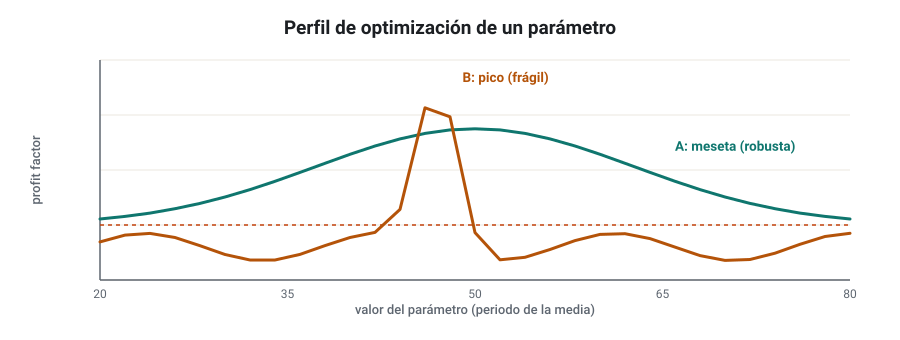
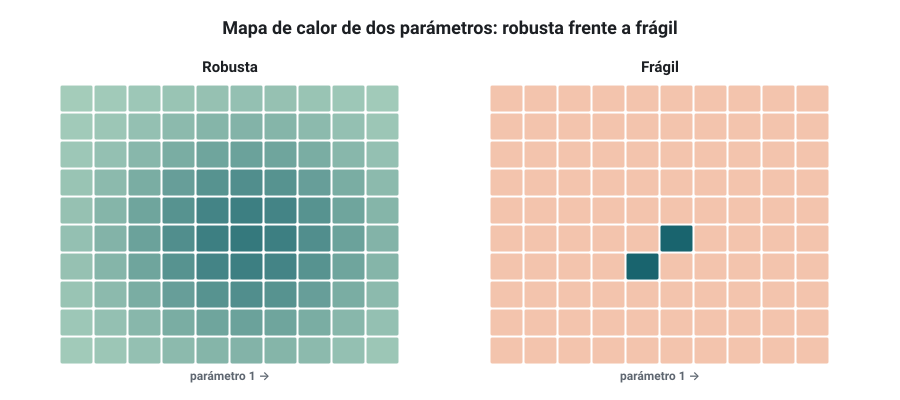
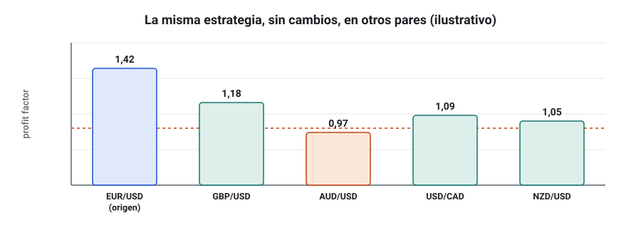
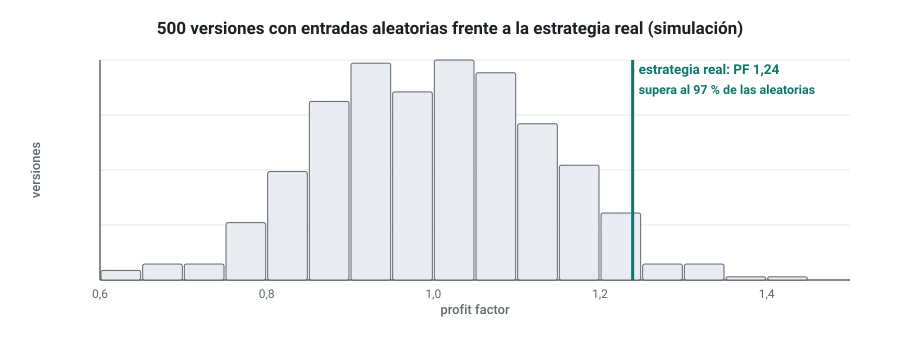
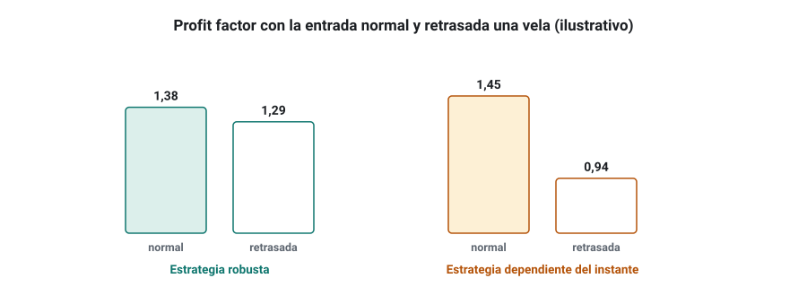
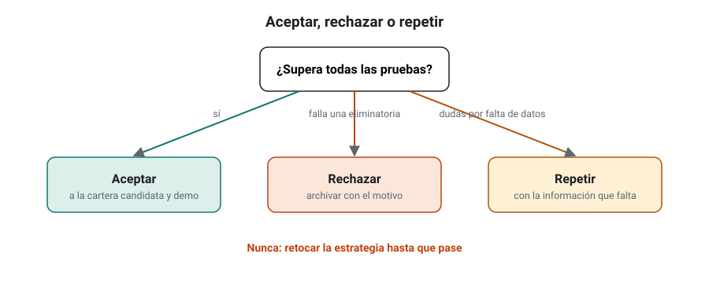
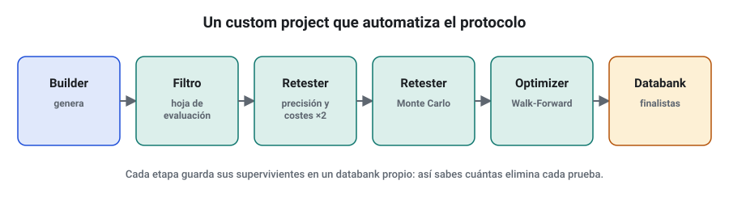

SEMANA 12 · ETAPA 3 · INVESTIGACIÓN Y VALIDACIÓN
Robustez y selección
Presentación de la semana
Última semana de la etapa 3. Completarás el protocolo de validación con las pruebas que faltan —robustez de parámetros, otros datos y mercados, comparación con benchmarks y riesgos de ejecución—, fijarás tus criterios de aceptación, rechazo y repetición y aprenderás a automatizar el protocolo con los custom projects de SQX. Terminarás con la evaluación integradora de la etapa: una investigación completa, de la hipótesis a la decisión.
Objetivos
Al terminar la semana sabrás:
- Evaluar la robustez de los parámetros con el perfil de optimización y el análisis SPP.
- Probar una estrategia con otros datos, otros periodos y otros mercados.
- Compararla con benchmarks adecuados, incluida una estrategia aleatoria.
- Identificar los riesgos de ejecución que el backtest no ve.
- Aplicar criterios explícitos de aceptación, rechazo y repetición.
- Automatizar el protocolo con custom projects.
- Llevar a cabo una investigación completa de forma autónoma.
Plan de la semana (22–25 horas)
| Bloque | Horas | Qué harás |
|---|---|---|
| Clases | 5 | Siete lecciones: lectura y vídeos |
| Prácticas | 9 | Pruebas de robustez y custom project |
| Evaluación integradora | 8 | Investigación completa de la etapa 3 |
| Revisión y planificación | 2 | Glosario, cuaderno y plan de la etapa 4 |
Qué necesitas
- SQX Professional o Ultimate (Optimizer y custom projects).
- Las candidatas aceptadas o en duda de la semana 11.
- Datos de otro proveedor (semana 9) y de al menos dos mercados parecidos a EUR/USD (por ejemplo, GBP/USD y AUD/USD).
Criterio para desbloquear la semana 13
Tener en estado APROBADO, con un 80 % o más cada uno:
- ☐ Examen de la semana 12
- ☐ Evaluación integradora de la etapa 3 (sustituye a la entrega práctica de esta semana)
- ☐ Investigación I-12 documentada dentro de la evaluación integradora
Robustez de parámetros: perfil de optimización y SPP
Formato: clase de 40 minutos · Lectura: 35 minutos
Mesetas y picos
Si cambias un parámetro de tu estrategia un poco (la media de 50 a 45 o a 55), el resultado debería cambiar un poco. Si se derrumba, la estrategia estaba encajada en un pico: una combinación concreta que funcionó por casualidad. Lo que buscas es una meseta: una zona amplia de parámetros donde la estrategia funciona de forma parecida.

El perfil de optimización
En el Optimizer de SQX, optimiza uno o dos parámetros en un rango amplio (por ejemplo, del 50 % al 150 % de su valor) y mira el resultado de todas las combinaciones, no solo la mejor. Con dos parámetros se ve como un mapa de calor.

Criterios orientativos:
- Al menos el 60–70 % de las combinaciones cercanas al valor elegido son rentables.
- El valor elegido está en el centro de la meseta, no en un borde.
- No hay saltos bruscos entre combinaciones vecinas.
SPP: permutación de parámetros
El análisis SPP (System Parameter Permutation, propuesto por Dave Walton) lleva la idea más lejos: en lugar de quedarse con la mejor combinación, toma todas las combinaciones razonables de parámetros y mira la distribución de sus resultados. La mediana de esa distribución es una estimación mucho más prudente del rendimiento esperado que el resultado de la mejor combinación, que siempre está inflado por la selección.
Comprueba que lo has entendido
- ¿Qué diferencia hay entre una meseta y un pico?
- ¿Por qué el valor elegido debe estar en el centro de la meseta?
- ¿Qué número usa el SPP como estimación del rendimiento y por qué?
Otras fuentes de datos, otros periodos y otros mercados
Formato: clase de 30 minutos · Lectura: 25 minutos
Tres pruebas de generalización
- Otro proveedor de datos (semana 9): si el resultado cambia mucho, la estrategia depende de detalles de los datos.
- Otros periodos: prueba la estrategia en años que no se usaron en ningún momento (por ejemplo, datos anteriores a 2014, si los tienes) y analiza su resultado año a año. Una estrategia que gana en 9 de 12 años es más fiable que una que gana mucho en 3 y pierde en los demás.
- Otros mercados: prueba la estrategia, sin cambiar nada, en mercados parecidos (otros pares de divisas principales, otros índices). Si su lógica es real, debería funcionar al menos razonablemente en algunos de ellos.

Cómo interpretar otros mercados
- No exijas el mismo resultado: cada mercado tiene su volatilidad, sus costes y sus horarios.
- Exige que no se hunda en la mayoría de los mercados parecidos.
- Si solo funciona en EUR/USD y pierde en todos los demás pares, sospecha: su ventaja puede ser un ajuste a la historia de EUR/USD.
Comprueba que lo has entendido
- ¿Por qué se analiza el resultado año a año?
- Una estrategia de EUR/USD gana en GBP/USD y AUD/USD pero pierde en USD/JPY. ¿Qué piensas?
- ¿Qué no debes hacer al probar en otro mercado?
Benchmarks adecuados
Formato: clase de 30 minutos · Lectura: 25 minutos
Comparar con algo
Un resultado no es bueno o malo en abstracto: es bueno o malo comparado con algo. Un benchmark es esa referencia. Los útiles para ti:
| Benchmark | Qué responde |
|---|---|
| Comprar y mantener el activo | ¿Mi estrategia aporta algo frente a no hacer nada? (útil en índices y acciones) |
| Activo sin riesgo (letras del Tesoro, depósitos) | ¿Compensa el riesgo que asumo? |
| Estrategia aleatoria con las mismas salidas | ¿Mis entradas tienen ventaja, o el resultado viene de las salidas y del mercado? |
| Otras estrategias de tu databank | ¿Es mejor que una típica del mismo proceso? |
La prueba de la entrada aleatoria
Esta prueba es especialmente reveladora: sustituye la regla de entrada por entradas al azar (con la misma frecuencia y dirección), mantén las salidas y repítelo cientos de veces. Si tu estrategia no está claramente por encima de la mayoría de esas versiones aleatorias, tus entradas no aportan nada.

Comprueba que lo has entendido
- ¿Qué benchmark usarías para una estrategia de compra en el S&P 500? ¿Por qué?
- ¿Qué te dice la prueba de la entrada aleatoria?
- Tu estrategia supera solo al 60 % de las aleatorias. ¿Qué concluyes?
Riesgos de ejecución
Formato: clase de 30 minutos · Lectura: 25 minutos
Lo que el backtest no ve
El backtest supone una ejecución ideal con los costes que configuraste. En real aparecen:
- Latencia: la orden tarda en llegar al broker. En estrategias intradía, unos cientos de milisegundos pueden cambiar el precio.
- Deslizamiento variable: mayor en noticias, aperturas y órdenes stop (semana 7).
- Recotizaciones y rechazos: el broker no acepta la orden al precio pedido.
- Ejecuciones parciales: en mercados con poca liquidez, solo se ejecuta una parte.
- Reglas del broker: distancia mínima de stops, horarios de negociación del símbolo, tamaño mínimo y paso del lote.
- Diferencias de plataforma: cómo calculan MT4 y MT5 las velas, los indicadores o los stops (semana 15).
- Fallos técnicos: cortes de conexión o reinicios del ordenador (lo resolverás con un VPS en la semana 16).
Cómo probarlo antes de operar
- Retrasar la entrada una vela en el Retester: si la estrategia se hunde, depende de entrar en el instante exacto.
- Monte Carlo de ejecución: deslizamiento aleatorio y rechazo de un porcentaje de órdenes (semana 11).
- Comprobar las reglas del broker para el símbolo: distancia mínima de stops frente a los stops de la estrategia.

Comprueba que lo has entendido
- Nombra cuatro riesgos de ejecución.
- ¿Qué te dice que una estrategia se hunda al retrasar la entrada una vela?
- ¿Qué regla del broker compruebas antes de operar una estrategia con stops de 8 pips?
Criterios de aceptación, rechazo y repetición
Formato: clase de 30 minutos · Lectura: 25 minutos
Tres decisiones posibles
Al final del protocolo, cada estrategia recibe una de tres decisiones:
- Aceptar: supera todas las pruebas con sus criterios. Pasa a la cartera candidata y a incubación en demo (etapa 4).
- Rechazar: falla una prueba esencial (OOS, Walk-Forward, Monte Carlo de costes, entrada aleatoria). Se archiva con el motivo.
- Repetir: el resultado es dudoso por falta de información (muestra OOS pequeña, datos dudosos). Se define qué información falta y cuándo se volverá a evaluar. Repetir no es «retocar hasta que pase».

Escríbelo antes
Tus criterios deben estar escritos antes de evaluar, en un documento con fecha. Ejemplo de estructura:
- Pruebas obligatorias y su orden.
- Criterio numérico de cada una.
- Qué fallos son eliminatorios y cuáles permiten «repetir».
- Cuántas veces como máximo puede repetirse una evaluación.
- Cómo se registran las decisiones.
Comprueba que lo has entendido
- ¿Qué diferencia hay entre repetir y retocar?
- ¿Qué pruebas considerarías eliminatorias?
- ¿Por qué se limita el número de repeticiones?
Custom Projects: automatizar el protocolo
Formato: taller de 40 minutos · Práctica: 2–3 horas
Para qué sirven
Los custom projects de SQX encadenan tareas: generar con el Builder, filtrar el databank, pasar las estrategias por el Retester con varias pruebas, optimizar con Walk-Forward y guardar las supervivientes, todo sin intervención. Ventajas:
- Reproducibilidad: el mismo protocolo exacto cada vez.
- Disciplina: no puedes saltarte una prueba porque te guste una estrategia.
- Escala: puedes procesar miles de candidatas mientras duermes.

Cómo construir uno
- Crea un custom project nuevo y añade las tareas en orden: Builder → filtro de databank → Retester con precisión alta y costes conservadores → Retester con Monte Carlo → Optimizer con Walk-Forward → databank final.
- En cada tarea, configura los criterios de tu protocolo como filtros para pasar a la siguiente.
- Usa databanks distintos para cada etapa, para ver cuántas estrategias elimina cada prueba.
- Ejecuta primero con pocas estrategias para comprobar que funciona; después, déjalo trabajando.
Comprueba que lo has entendido
- Nombra dos ventajas de automatizar el protocolo.
- ¿Para qué sirve usar un databank distinto por etapa?
- ¿Por qué automatizar no elimina el sesgo de selección?
Evaluación integradora de la etapa 3
Formato: proyecto autónomo · Trabajo: 8 horas
La evaluación integradora sustituye a la entrega práctica de esta semana. Llevarás a cabo una investigación completa con los ocho pasos y el protocolo completo, de forma autónoma.
El encargo
Investiga si una lógica concreta (de las familias de las semanas 7 y 8) tiene ventaja en un mercado de tu elección y entrega, como resultado, entre cero y tres estrategias aceptadas.
Requisitos
- Hipótesis con explicación económica, escrita antes de generar.
- Informe de calidad de los datos utilizados (semana 9).
- Protocolo con criterios fijados y fechados antes de evaluar (lecciones 5 de esta semana y de la semana 11).
- Registro de pruebas completo: proyectos, estrategias generadas, variantes.
- Resultados de todas las pruebas: hoja de evaluación, OOS, Walk-Forward y matriz, Monte Carlo, parámetros, otros mercados, entrada aleatoria y retraso de una vela.
- Decisión para cada candidata: aceptar, rechazar o repetir, con el motivo.
- Conclusión sobre la hipótesis, con sus limitaciones.
Glosario de la semana
| Término | Inglés | Definición |
|---|---|---|
| Comprar y mantener | Buy and hold | Comprar un activo y conservarlo sin operar |
| Custom project | Custom project | Flujo automático de tareas en SQX |
| Ejecución parcial | Partial fill | Orden que solo se ejecuta en parte |
| Entrada aleatoria | Random entry | Prueba que sustituye la regla de entrada por entradas al azar |
| Latencia | Latency | Tiempo que tarda una orden en llegar y ejecutarse |
| Mapa de calor | Heat map | Gráfico que muestra con colores el resultado de cada combinación de dos parámetros |
| Meseta | Plateau | Zona amplia de parámetros con resultados parecidos |
| Perfil de optimización | Optimization profile | Resultado de la estrategia para todo un rango de valores de un parámetro |
| Pico | Peak | Combinación aislada de parámetros con un resultado excepcional |
| Recotización | Requote | Rechazo de una orden con una oferta a otro precio |
| SPP | System Parameter Permutation | Análisis de la distribución de resultados de todas las combinaciones razonables de parámetros |
Ejercicios obligatorios
E1 · Perfil. Optimiza un parámetro de tu mejor candidata en un rango del 50 % al 150 % de su valor y dibuja el perfil. ¿Meseta o pico?
E2 · Mapa de calor. Haz el mapa de calor de dos parámetros y calcula el porcentaje de combinaciones rentables en el entorno de ±20 % del valor elegido.
E3 · SPP. Con los resultados del E2, calcula la mediana del beneficio de todas las combinaciones y compárala con la de la combinación elegida.
E4 · Año a año. Haz una tabla con el beneficio de tu candidata en cada año. ¿En cuántos años gana?
E5 · Otros mercados. Prueba tu candidata, sin cambios y con los costes de cada mercado, en dos pares más. Presenta los resultados.
E6 · Entrada aleatoria. Si tu versión de SQX lo permite, haz la prueba de entrada aleatoria; si no, simula en la hoja de cálculo 50 secuencias de entradas aleatorias con las mismas salidas sobre tu lista de operaciones y compara.
E7 · Retraso. Prueba tu candidata retrasando la entrada una vela. ¿Cuánto cambia el profit factor?
E8 · Reglas del broker. Anota la distancia mínima de stops, el lote mínimo y el horario del símbolo en tu broker, y comprueba si tu candidata los respeta.
E9 · Criterios. Escribe tu documento de criterios de aceptación, rechazo y repetición, con fecha.
E10 · Custom project. Construye un custom project con al menos cuatro tareas encadenadas y documenta cuántas estrategias elimina cada etapa en una ejecución de prueba.
Investigación I-12 y entrega práctica
Investigación I-12 · Evaluación integradora
Esta semana, la investigación es la evaluación integradora (lección 7). Sigue los ocho pasos con el protocolo completo.
Entrega práctica · Evaluación integradora de la etapa 3
Qué entregar
| Archivo | Contenido |
|---|---|
CODIGO_S12_INT |
Informe de la investigación completa con los siete requisitos de la lección 7 |
CODIGO_S12_CRIT |
Documento de criterios fechado |
CODIGO_S12_SQX |
Custom project y estrategias aceptadas |
CODIGO_S12_REG |
Registro de pruebas de toda la etapa |
| Ejercicios | E1 a E10 |
Cómo se evaluará
| Bloque | Peso |
|---|---|
| Hipótesis y diseño previos | 15 % |
| Calidad de datos | 10 % |
| Protocolo y criterios fijados antes | 20 % |
| Ejecución completa de las pruebas | 25 % |
| Coherencia de las decisiones | 15 % |
| Conclusiones y limitaciones | 15 % |
Se aprueba con un 80 %. Si falta el documento de criterios fechado o el registro de pruebas, la evaluación queda como NO EVALUABLE.
Examen de la semana 12 · Variante A
Tiempo orientativo: 60 minutos · Puntuación: 100 puntos · Aprobado: 80 puntos · Puedes usar calculadora, pero no el material del curso ni el tutor de IA. Si suspendes, repetirás con otra variante.
Parte A · Opción múltiple (30 puntos, 2 por pregunta)
Parte B · Cálculo (45 puntos, 15 por ejercicio)
B1. El perfil de un parámetro (valores 30 a 70, de 5 en 5) da estos profit factor: 0,96; 1,08; 1,21; 1,29; 1,33; 1,31; 1,26; 1,14; 1,02. El valor elegido es 50. a) ¿Qué porcentaje de valores tiene PF ≥ 1,1? b) ¿Está el valor elegido en el centro de la meseta? c) Calcula la mediana de los nueve PF y compárala con el del valor elegido.
B2. Tu estrategia tiene un PF de 1,38. De 500 versiones con entradas aleatorias, 470 tienen un PF menor que 1,38. a) ¿A qué porcentaje de las aleatorias supera? b) ¿Qué percentil ocupa? c) ¿Aceptarías que sus entradas tienen ventaja con un criterio del 95 %?
B3. Una candidata gana en 7 de 11 años. Su PF es 1,42 en EUR/USD, 1,18 en GBP/USD, 0,97 en AUD/USD y 1,09 en USD/CAD (sin cambios y con sus costes). a) ¿Qué porcentaje de años es ganador? b) ¿En cuántos de los otros pares supera PF 1? c) Con el criterio «ganar en al menos el 60 % de los años y no hundirse (PF ≥ 0,9) en ningún mercado parecido», ¿la aceptas?
Parte C · Razonamiento (25 puntos)
En un máximo de 250 palabras: describe tu protocolo completo de validación, de la generación a la decisión, y explica qué tipo de error elimina cada prueba.